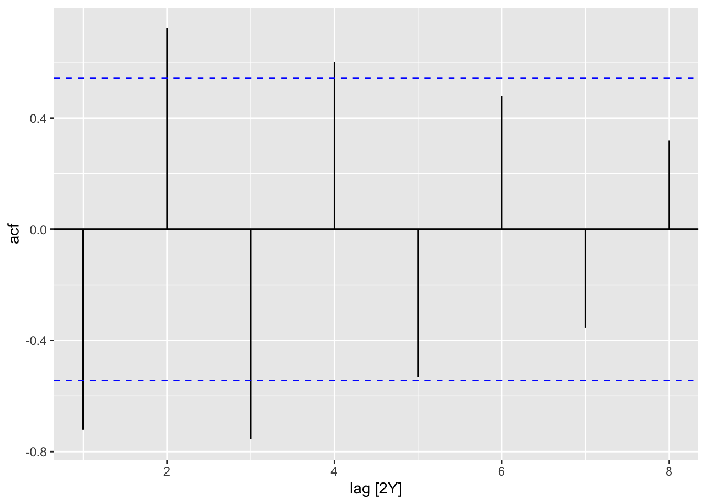
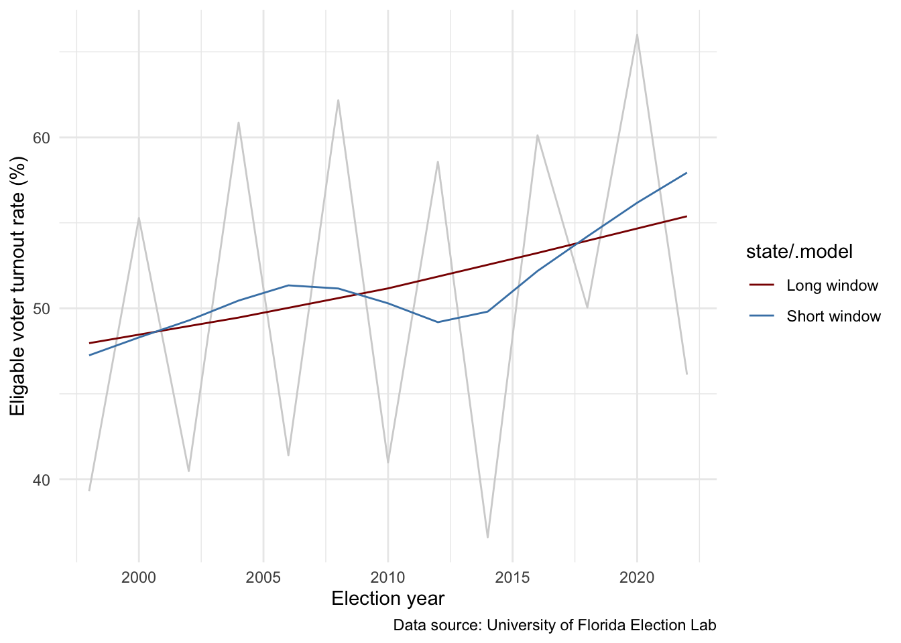

4 Finding Patterns Over Time
4.1 The Art of Decomposition
At its core, time series forecasting is about recognizing patterns. When we look at a time series—like a stock price, a monthly sales figure, or a political approval rating—what we see is often a messy, complicated line. Our goal in this chapter is to develop the skills to explore and formalize the relationship between our outcome of interest and time itself by breaking that messy line into three cleaner, more predictable components: the Trend, the Seasonality, and the Remainder.
This process is called Time Series Decomposition. It’s like taking apart a complex machine (the time series) into its simple, functional components. Once we understand how each component works in isolation, we can put them back together to make powerful predictions.
The decomposition model we rely on is generally expressed as:
Trends
Let’s take another look at Mr Trump’s approval rating over his current term in office, which is shown in Figure 4.1. If I asked you to summarize how his popularity was tracking, what would you say?
In general, his approval rating is decreasing. In fact, I can draw a straight line through these data to capture that downward trend, as I have done in Figure 4.2. A trend exists when there is a long-term increase or decrease in the data. We use the trend to describe the general pattern of our data, ignoring small or random fluctuations and noise.
Trends do not need to be linear. For example, Figure 4.3 shows global Gross Domestic Product (GDP) from 1952 to 2007. In general, GDP is growing at an increasing rate. Therefore, its trend is positive and exponential.
Trends are useful summaries of the general relationship between your variable of interest and time. By stripping away fluctuations from this general pattern, we gain a better understanding of the broad thrust of our data. We will learn how to do this formally shortly.
4.2 Seasons and cycles
Some of those fluctuations away from our trend are important. This is especially the case when they occur repeatedly. A seasonal pattern occurs when a time series deviates from its trend with some pattern and at regular intervals. Seasonality is always of a fixed and known period. On the other hand, a cycle occurs when a time series rises and falls in a regular pattern away from its trend, but not at a fixed frequency.
Let’s focus on a seasonal pattern in some political data. Voter turnout rates in US general elections are always higher than they were two years previously, as shown in Figure 4.4. This is because mid-term general elections consistently get a lower turnout than presidential general elections.
As shown in Figure 4.5, we can see this saw-tooth, seasonal pattern generally holds across the 50 US states and the District of Columbia.
When trying to understand the relationship between voter turnout and time (for example, if we want to predict next election’s turnout rate), we should account for these patterns.
4.2.1 Identifying the seasons
We can more formally identify whether our time series is seasonal than by eyeballing these patterns. These patterns are defined across time. So, we can look at how the value changes over time to identify that pattern. For example, we can identify the saw-tooth pattern in US voter turnout by comparing each value to its previous value. If those comparisons match their counterparts, we have evidence of a repeated pattern.
This is best understood through an illustration. To begin, let’s use a lag plot. This plots each value against its previous value, lagged by varying time periods. The value is plotted on the y-axis and its corresponding lagged value is plotted on the x-axis.
Figure 4.6 is a lag plot of US general election turnout rates. The first plot, titled lag 1, plots each election’s turnout rate against the turnout rate of the previous election. So the turnout rate for the 2022 election is plotted (on the y-axis) against the turnout rate for the 2020 election (x-axis). The second plot, titled lag 2, plots each election’s turnout rate against the turnout rate of two elections ago. The turnout rate for the 2022 election is plotted against the turnout rate for the 2018 election.
us_turnout_ts |>
filter(state == "United States", year >= 1998) |>
gg_lag(vep_turnout_rate, geom = "point") +
theme_minimal() +
labs(x = "Turnout rate lagged (%)",
y = "Turnout rate (%)",
caption = "Data source: University of Florida Election Lab")If the two election turnout rates are exactly the same, they will fall on the dashed grey line cutting diagonally through each plot. If the two election rates are very different from one another, they will cluster in the upper left hand or lower right hand corners of the plots.
Odd numbered lags (1, 3, 5, 7, and 9) plot turnout rates for mid-term and presidential elections against each other (for example, the 2022 mid-term election is plotted against the 2020 presidential election in lag 1). We consistently see two clusters of dots sitting in opposite corners of those graphs. This means that their turnout rates tend to be very different from each other. More formally, these values are strongly negatively (auto)correlated.
Even numbered lags (2, 4, 6, and 8) are plotting like-for-like elections: mid-terms against mid-terms and presidentials against presidentials. We see a strong positive (auto)correlation in these plots. The dots are scattered close to the horizontal dashed line that represents equal values.
Strong correlations between values and their lagged counterparts at regular intervals are evidence of seasonality. (If these correlations occur at irregular intervals, this is evidence of cycles.) We can calculate these correlations using feasts::ACF(). They are called autocorrelations because we are looking for the relationships lurking within the variable itself.
Let’s look at autocorrelation coefficients for up to eight lagged election years:
us_turnout_autocor <- us_turnout_ts |>
filter(state == "United States", year >= 1998) |>
ACF(var = vep_turnout_rate, lag_max = 8)
us_turnout_autocor# A tsibble: 8 x 3 [2Y]
# Key: state [1]
state lag acf
<chr> <cf_lag> <dbl>
1 United States 2Y -0.722
2 United States 4Y 0.723
3 United States 6Y -0.756
4 United States 8Y 0.601
5 United States 10Y -0.531
6 United States 12Y 0.479
7 United States 14Y -0.354
8 United States 16Y 0.319As usual, these data are much easier to digest visually. Let’s plot those autocorrelation coefficients:
autoplot(us_turnout_autocor)

Figure 4.7 shows the value of the autocorrelation as a spike emerging from the x-axis. A line descending below the x-axis indicates a negative correlation and, conversely, a line ascending above the x-axis indicates a positive one. Stronger correlations are shown by longer lines.
Voter turnout rates for mid-term and presidential elections are different. This is shown by the negative autocorrelation at odd-numbered intervals. Turnout rates for like-elections (mid-term and mid-term, or presidential and presidential) are similar to each other, or positively autocorrelated. The clear pattern in these autocorrelations (negative, positive, negative, positive, etc.) is evidence of seasonality.
4.2.2 White noise
Sure, turnout rates in like elections look alike, but are they really that similar. How confident can we be that they are sufficiently similar to each other to indicate a pattern? To answer this question, I will make up some data that are genuinely random. By design, there are no patterns (seasons or cycles) in these data.
I use rbinom() to randomly sample from a binomial distribution. These data points do not relate to one another. I should find no meaningful patterns within them.
set.seed(1234)
random_ts <- tsibble(sample = 1:50, value = rbinom(50, 50, prob = 0.5),
index = sample)
autoplot(random_ts, value)Now let’s calculate the autocorrelation coefficients, as we did above:
ACF(random_ts) |>
autoplot()There is some autocorrelation: these data are not completely different from one another. This is normal, but we need some way of distinguishing this white noise from meaningful correlations. Borrowing from frequentist statistics, we need some threshold beyond which we are willing to say that these autocorrelation coefficients are sufficiently different from zero for us to consider them meaningful associations.
Autocorrelation coefficients from an infinitely large random sample follow a Normal distribution centered at zero. Don’t take my word for it: Figure 4.9 shows the autocorrelations among a very large random sample1 from a binomial distribution2. They fall along that lovely bell-shaped curve.
set.seed(1234)
large_random_ts <- tsibble(sample = 1:1e5, value = rbinom(1e5, size = 1e5,
prob = 0.5),
index = sample)large_random_acf <- ACF(large_random_ts, lag_max = 1e5)
ggplot() +
geom_density(aes(x = large_random_acf$acf)) +
theme_minimal()This is very handy because we know what proportion of those infinite values fall at any point along a standard Normal distribution (centered at zero and with a standard deviation of one). For example, we know that 95 percent of these values fall between roughly 1.96 standard deviations above and below that center point.
So, if our values are random and there is no relationship between them, we will get autocorrelation coefficients between them that are Normally distributed with a center point of zero. Now, we can place any autocorrelation coefficient we do find in our data within this context. I can calculate how likely I was to get that coefficient or a more extreme one if my values are, in fact, just random.
Look again at Figure 4.9. A lot of the coefficients from that completely random draw sit between -0.005 and 0.005. So, if I get a coefficient within that range it is very plausible that it resulted from a completely random sample. I don’t have enough evidence that the relationship is anything other than white noise. If; however, I get a coefficient of, say, 0.010 or higher, I’m starting to get a bit suspicious of the idea that the values are random. It is really unlikely that I would find a coefficient that big if they were.
In the sciences, we generally accept a five percent chance that we will incorrectly say that the value we found was so extreme that it provides us with good evidence our data are not random. This five percent threshold is commonly referred to as p = 0.05: you should remember it from any statistics courses you have taken.
So, we know that 95 percent of the autocorrelation coefficients that could plausibly result from random values fall 1.96 standard deviations away from a standardized Normal distribution. So if the coefficients we find in our data fall further from their center than 1.96 standard deviations above and below it, we have good evidence to reject the idea that these data are not autocorrelated. Gosh, that was a lot of double negatives. Frequestist statistics requires us to stretch our intuition a little far.
To locate our autocorrelation coefficient on this standard Normal distribution, we ask whether it lies outside of \(\pm \frac{1.96}{\sqrt{T}}\), where \(T\) is the length of the time series. Conveniently, autoplot() plots those boundaries for us (the dashed blue lines on Figure 4.7 and Figure 4.8).
From Figure 4.7, we can see that the first four lagged election years exceed this threshold. They are sufficiently different from zero. In other words, they are sufficiently similar to one another to suggest a meaningful relationship. Our white noise (Figure 4.8), on the other hand, never meets this threshold. Good! It’s just random values plucked from a binomial distribution.
Interestingly, the degree to which turnout rates a similar to each other decrease over time. Elections that were more than four elections away from each other are too different from each other to suggest they are related. This hints at a trend. Looking back at Figure 4.4, it appears that the turnout rate for US elections is increasing. A greater proportion of eligible voters showed up in recent elections than in elections held in the late 1990s and early 2000s.
4.3 Decomposing time series
We have identified both a trend and seasonality in US general election voter turnout rates. How can we isolate those components? In other words, how can we extract the overall trend and identify the seasonal pattern in our data?
We can decompose a time series into three parts: its trend-cycle, seasonal, and remainder components. I will discuss how we do this shortly. But first, it is helpful to see the end result. Here are those three components of the voter turnout data:
dcmp <- us_turnout_ts |>
filter(state == "United States", year >= 1998) |>
model(stl = STL(vep_turnout_rate ~ season(period = "4 years")))
components(dcmp)# A dable: 13 x 8 [2Y]
# Key: state, .model [1]
# : vep_turnout_rate = trend + `season_4 years` + remainder
state .model year vep_turnout_rate trend `season_4 years` remainder
<chr> <chr> <dbl> <dbl> <dbl> <dbl> <dbl>
1 United States stl 1998 39.3 47.4 -9.25 1.20
2 United States stl 2000 55.3 48.2 9.26 -2.17
3 United States stl 2002 40.5 49.2 -9.28 0.551
4 United States stl 2004 60.9 50.8 9.29 0.768
5 United States stl 2006 41.4 51.6 -9.30 -0.865
6 United States stl 2008 62.2 51.5 9.32 1.34
7 United States stl 2010 41.0 50.7 -9.34 -0.397
8 United States stl 2012 58.6 48.6 9.37 0.592
9 United States stl 2014 36.6 48.3 -9.39 -2.26
10 United States stl 2016 60.1 51.9 9.41 -1.16
11 United States stl 2018 50.0 56.1 -9.41 3.33
12 United States stl 2020 66.0 56.5 9.41 0.0952
13 United States stl 2022 46.1 56.2 -9.41 -0.661
# ℹ 1 more variable: season_adjust <dbl>The output provides the observed voter turnout rate (vep_turnout_rate) and then the three component parts (trend, season_4_ years, and remainder).
The trend component captures the broad pattern found within the series. It ignores any seasonal or random fluctuations. As Figure 4.10 shows, turnout at general elections is increasing over time. There is a slight dip in turnout in 2012 and 2014 (Obama’s second term, and the mid-term election that followed). This dip is much clearer when we strip the seasonality and random noise from the overall trend.
We can look at all three components, and the observed turnout rates, in Figure 4.11. The seasonal component captures the extent to which voter turnout changes between mid-term and presidential election years. Interestingly, this appears to be consistent across our data: the extent to which a smaller proportion of people turnout to vote in mid-term elections compared to presidential ones has not changed since the late 1990s. Again, this is difficult to see when we don’t remove the (positive) trend from the data.
The remainder captures whatever variation exists in our data that are not accounted for by the trend and seasonal fluctuations.
This is an additive decomposition, so you can get the observed turnout rate in any given election year by simply adding these three components together. This is appropriate because the magnitude of the seasonal fluctuations has not changed over time.
Alternatively, we can calculate a multiplicative decomposition, in which the observed values are the product of the trend, seasonal, and remainder components. This method is best used when the seasonal component changes over time. For example, if the difference between turnouts in mid-term and presidential elections increased or decreased over time.
4.3.1 Calculating the components of your time series
There are many different ways to decompose your time series. Here, we will focus on STL, which stands for Seasonal and Trend decomposition using LOESS. LOESS is a method for estimating non-linear relationships. Details of how STL (and LOESS) is calculated can be found in Cleveland, Cleveland, and Terpenning (1990).
You need to make two important decisions when using STL: the trend-cycle window and the seasonal window. These control how rapidly the trend-cycle and seasonal components can change, with smaller values allowing for more rapid changes.
The trend-cycle window is the number of consecutive observations you want to use to estimate the trend-cycle. It must be an odd number. A larger window results in a smoother trend-cycle line. Therefore, your model is less responsive to short-term fluctuations. A very large window can lead to oversmoothing, where some genuine cyclical variation is mistakenly pushed into the remainder component.
A smaller window uses a smaller number of observations. This results in a more flexible or wiggly trend-cycle line, allowing it to closely follow rapid rises and falls in the data. A very small window can lead to overfitting, where the trend-cycle captures too much of the irregular or seasonal variation.
In general, you should use a number larger than the seasonal period of the data. For example, our seasonal pattern in US general election turnout rates runs over four years. Our trend cycle window should, therefore, be larger than four. Choosing the right window is a trade-off between capturing the true long-term movement and being overly sensitive to short-term noise.
To illustrate, Figure 4.12 shows the STL calculated with two different trend-cycle windows: a short one of seven, and a long one of 21. The longer window completely misses the dip during Obama’s second term and the subsequent mid-term election. (The dip is relegated to the remainder component.)
Which one should you use? Which ever one you think better represents the time series. We will discuss formal methods for comparing models later in the course, but your gut feeling (informed by your knowledge of the thing you are trying to model) is a wonderful asset. Trust it. For what it’s worth, I would pick the seven-year window.

The seasonal window directly controls the rate at which the seasonal pattern is allowed to change over the length of the time series. It must also always be an odd number. A smaller window is more flexible. It allows the seasonal pattern to change more quickly over time. This is useful if you believe the seasonality is evolving or adapting (e.g., people’s holiday shopping habits are shifting). A larger window is less flexible or smoother. The seasonal pattern is held more constant over time. This is used if you believe the underlying seasonality is very stable. You can also set the seasonal window to be periodic or infinite. This forces the pattern to be completely fixed. The seasonal pattern is identical across all periods.
Figure 4.13 compares a short (5 year), long (11 year), and periodic (fixed) window for US voter turnout. They are all very similar because the difference between voter turnout in presidential and mid-term elections has not changed all that much across these two-and-a-half decades of data.
4.3.2 Seasonally-adjusted data
If you do not care about the variation due to seasonality, you should remove it from your model of the relationship between time and our outcome of interest. This leaves you with the trend and remainder components. When we do this, we call the data “seasonally-adjusted”.
You should use seasonally-adjusted time series data to analyze underlying trends and compare movements between different time periods, as it removes the predictable, repeating patterns (like holiday shopping or weather effects) that naturally occur within a year. This allows you to see the “true” non-seasonal changes. It is useful for understanding short-term fluctuations beyond the usual patterns.
However, if you want to find turning points in a series, and interpret any changes in direction, then you should use the trend-cycle component (as shown in Figure 4.10 for US voter turnouts) rather than the seasonally-adjusted data. The remainder component can distract from this analysis.
4.4 Measuring the strength of trend and seasonality in a time series
This decomposition is additive: you can reconstruct the observed voter turnout rate by adding together the trend-cycle, seasonal, and remainder components. Formally:
\[ y_t = T_t + S_t + R_t \]
Where \(y_t\) is the observed value at time \(t\), \(T_t\) is the trend_cycle component, \(S_t\) is the seasonal component, and \(R_t\) is the remainder component.
We can isolate the strength of the trend-cycle component by looking at how much variation in the seasonally-adjusted data come from that component. If the data are strongly trended (most of the pattern we see is driven by the overall trend, rather than seasonality or random noise), the amount of variation in the remainder component relative to all variation in the seasonally-adjusted data should be small.
A common measure of the strength of the trend in time series is, therefore:
\[ F_T = max(0, 1 - \frac{Var(R_t)}{Var(R_t + T_t)}) \]
This gives us a measure of the strength of the trend that lies between 0 and 1, with higher values indicating that the trend is driving the pattern we see in the data.3 The strength of seasonality is defined similarly, but with respect to the detrended data rather than the seasonally adjusted data:
\[ F_S = max(0, 1 - \frac{Var(R_t)}{Var(R_t + S_t)}) \]
Before we calculate the strength of trend and seasonality in US voter turnout, guess how you think they will compare. Do you think the time series is very seasonal? Or do you think the pattern is driven by that overall positive trend in turnout?
Let’s first calculate these manually:
dcmp <- us_turnout_ts |>
filter(state == "United States", year >= 1998) |>
model(stl = STL(vep_turnout_rate ~ season(period = "4 years", window = "periodic") +
trend(window = 7))) |>
components()
strength_trend <- max(0, 1 - (var(dcmp$remainder) / var(dcmp$season_adjust)))
strength_trend[1] 0.6665958strength_season <- max(0, 1 - (var(dcmp$remainder) / var(dcmp$`season_4 years` +
dcmp$remainder)))
strength_season[1] 0.947254US voter turnout is strongly seasonal and moderately trended. This passes my vibe check!
I use a sample of 100,000 for illustrative purposes. Sadly, I can’t take an infinitely large sample.↩︎
Autocorrelation coefficients will be Normally distributed when drawn from a large sample of any distribution!↩︎
For very noisy time series, variation in the remainder (\(Var(R_t)\)) might be larger than the variation in the seasonally-adjusted data (\(Var(R_t + T_t)\)). Hence, the floor of zero.↩︎